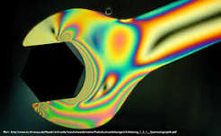
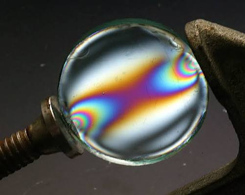
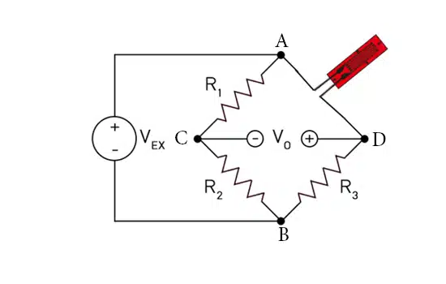

مقدمه: در حالی که امروزه نرمافزارهای المان محدود (FEA) نظیر Abaqus، ANSYS و SolidWorks ابزارهای اصلی و قدرتمند در تحلیل المانهای ماشین و طراحی اجزا محسوب میشوند، اتکای صرف به شبیهسازی کامپیوتری کافی نیست. روشهای آزمایشگاهی تحلیل تنش نهتنها برای صحتسنجی (Validation) نتایج مشبندیهای عددی حیاتی هستند، بلکه در شرایطی که مدلسازی دقیق شرایط مرزی، اصطکاک یا متریال پیچیده در نرمافزار امکانپذیر نیست، به عنوان منبع اصلی استخراج دادههای واقعی به کار میروند. در این پژوهش به بررسی سه روش اصلی فوتوالاستیسیته، پوشش ترد و کرنشسنج الکتریکی میپردازیم.
روش فوتوالاستیسیته (Photoelasticity)
فوتوالاستیسیته یک روش اپتیکی (نوری) تماممیدان (Full-field) برای مشاهده و اندازهگیری توزیع تنش در قطعات است. اساس کار این روش بر پایه پدیده شکست مضاعف موقت (Temporary Birefringence) در مواد پلیمری و شفاف (مانند رزینهای اپوکسی یا پلیکربناتها) است. هنگامی که یک قطعه شفاف ساخته شده از این مواد تحت بارگذاری قرار میگیرد، ضریب شکست نور در امتداد تنشهای اصلی تغییر میکند.
برای انجام آزمایش، مدل پلاستیکی را در دستگاهی به نام پلاریسکوپ (Polariscope) قرار میدهند. با عبور نور قطبیده (پلاریزه) از قطعه تحت بار، دو دسته خطوط یا حاشیههای نوری ظاهر میشود:
۱. ایزوکروماتیکها (Isochromatics): نوارهای رنگی (در نور سفید) یا تیره و روشن (در نور تکفام) که مکان هندسی نقاطی با اختلاف تنشهای اصلی برابر (σ₁ - σ₂) هستند.
۲. ایزوکلینیکها (Isoclinics): نوارهای تاریکی که نشاندهنده جهت تنشهای اصلی در قطعه میباشند.


روش پوشش ترد / لاک (Brittle Coating)
روش پوشش ترد، یکی از تکنیکهای نیمهمخرب و تجربی است که برای تشخیص سریع نقاط بحرانی و جهتگیری تنشها بر روی سطح قطعات واقعی (با هر جنس و هندسهای) به کار میرود. در این روش، لایهای بسیار نازک از یک لاک یا رزین مخصوص روی سطح قطعه اسپری میشود. پس از خشک شدن، قطعه واقعی تحت بار مکانیکی قرار میگیرد.
از آنجا که لاک استفاده شده خاصیت تردی بسیار بالایی دارد، با رسیدن قطعه به یک حد کرنش خاص (آستانه حساسیت لاک)، روی سطح لاک ترکهای مویی (Micro-cracks) ایجاد میشود. نکته حیاتی مهندسی این است که این ترکها همواره دقیقاً عمود بر جهت تنش کششی اصلی اول (σ₁) باز میشوند.

روش کرنشسنج الکتریکی (Electrical Strain Gauge)
استرینگیج یا کرنشسنج، دقیقترین و پرکاربردترین سنسور در مهندسی مکانیک تجربی است. اساس کار این روش بر پایه رابطه بین تغییر طول فیزیکی یک هادی الکتریکی و تغییر مقاومت الکتریکی آن است. سنسور متشکل از یک شبکه مارپیچ از فویل فلزی بسیار نازک است که روی یک لایه عایق قرار دارد و با چسب مخصوص مستقیماً به سطح قطعه چسبانده میشود.
وقتی قطعه کشیده یا فشرده میشود، فویل فلزی نیز تغییر طول داده و مقاومت آن تغییر میکند (ΔR / R = GF × ε). در اینجا GF ضریب حساسیت کرنشسنج است. این تغییر مقاومت بسیار کوچک، توسط مداری به نام پل وتستون (Wheatstone Bridge) اندازهگیری میشود. در حالاتی که راستای تنشهای اصلی مشخص نباشد، از یک کرنشسنج گلسرخی (Rosette) استفاده میکنند.

